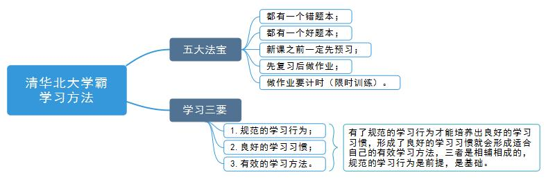
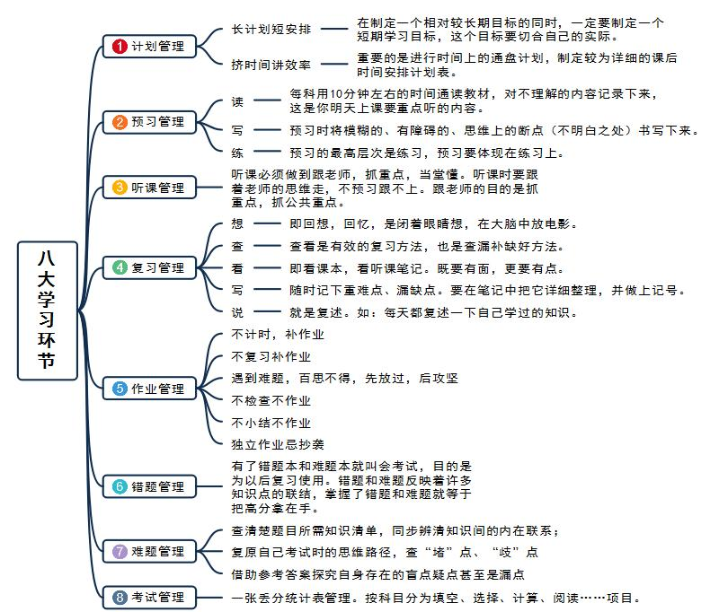

没有不想成为学霸的孩子，只有缺少正确的学习方法。如果掌握正确的方法，你也可以像清华北大的学生一样优秀！在本篇文章，我们将通过MindMaster这款软件制作的思维导图，来为你揭开学霸们常用的学习方法！
思维导图带你了解学霸们的学习方法
《刻意练习》这本书告诉我们，世界上没有绝对的天才，每个人生而平等，拥有相似的“操作系统”；那为什么经过几十年的成长，个体之间的差异会这么大呢？关键原因在于后天的学习与练习。
正是因为清华北大的学霸们掌握着一套科学的学习方法，才拥有与凡人所不同的成就。以下这幅思维导图剖析了学霸们的五大法宝和学习三要。

思维导图剖析八大学习环节
围绕学习这项技能，具体可以细分为八个学习环节，分别是：计划、预习、听课、复习、作业、错题、难题、考试。如果你能够掌握其中六项及其以上的学习环节，并将其成为学习习惯的一部分，你离成功的彼岸也会越来越近。

通过上述的思维导图，你对这八大学习环节是不是有更深入的认识呢？希望你也能快速让这些环节成为一种学习习惯！